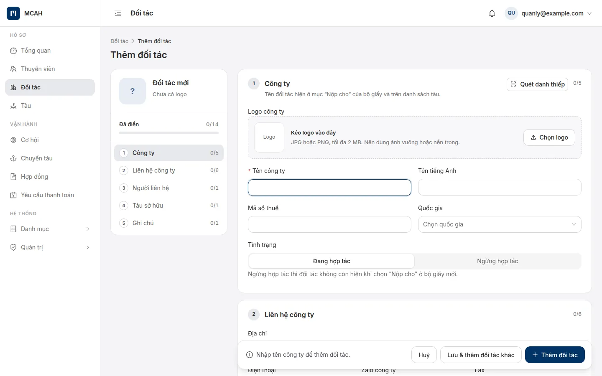

Hồ sơ
Đối tác
Chủ tàu, đối tác và người liên hệ; quét danh thiếp, mã QR.
Danh bạ chủ tàu và các công ty đối tác: tên công ty (tiếng Việt và tiếng Anh), mã số thuế, logo, liên hệ công ty, danh sách người liên hệ và các tàu sở hữu. Tên đối tác hiện ở mục "Nộp cho" của bộ hồ sơ và trên danh sách tàu.

Quét danh thiếp và mã QR
- Quét danh thiếp: chụp hoặc chọn ảnh danh thiếp, AI điền họ tên, chức vụ, email, điện thoại của người liên hệ. Kiểm tra rồi lưu.
- Quét mã QR kết bạn Zalo, WhatsApp, WeChat hoặc LINE của người liên hệ để lưu đường liên lạc. Mã QR chỉ chứa đường dẫn kết bạn nên app lưu đường dẫn đó.
Email của người liên hệ chính là địa chỉ mặc định khi gửi hồ sơ cho chủ tàu (mục Gửi chủ tàu).
ViệcQuyền cần cóThường do
Xem danh sách và chi tiếtĐối tác · Xem danh sách và chi tiếtMôi giớiKế toán
Thêm, sửa đối tácĐối tác · Thêm đối tác, Sửa đối tácMôi giới
Xoá đối tácĐối tác · Xoá đối tácQuản trị